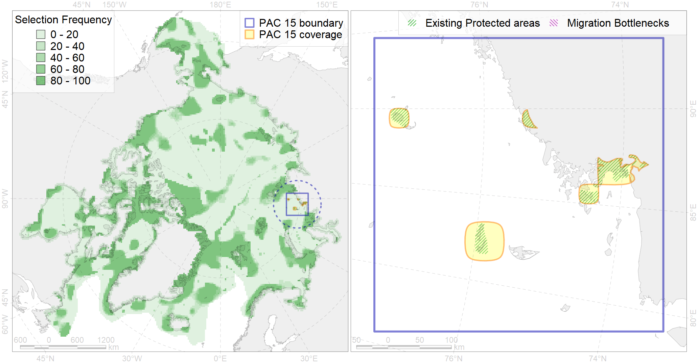

Region 15
Region 15
“ArcNet” scenario 33 achievement for region 15.
Use Accenter for advanced mode.

0
CFs inside of Region completely
0
CFs inside of Region at quarter
2
Complete-targets achievement by Region
4
Half-targets achievement by Region
| CF | Name | Target Achievement for Region | Proportion of Target Achievement in Region | Amount Proportion in Region |
|---|---|---|---|---|
| 8026 | intertidal zone of the Kara Sea LME | 107.6% | 43.1% | 19.6% |
| 3013 | Fast ice distribution in the Central part of the Kara Sea | 256.4% | 49.0% | 16.9% |
| 3115 | polynya Kara islands | 56.8% | 48.4% | 8.3% |
| 6038 | Ivory gull (Pagophila eburnea) Kara Sea breeding colonies | 10.3% | 9.5% | 6.7% |
| 7108 | II.1.1.2. Eastern Kara insular areas and banks at middle and outer shelf | 25.9% | 17.2% | 5.3% |
| 8021 | Kara Sea estuaries | 18.3% | 16.2% | 5.2% |
| 3010 | Fast ice distribution in the Eastern part of the Kara Sea | 86.3% | 10.1% | 5.2% |
| 6006 | Brent goose (Branta bernicla bernicla) breeding&moulting grounds | 25.1% | 7.8% | 4.6% |
| 1007 | Atlantic Walrus haulouts in Pechora and Kara region | 4.5% | 4.4% | 4.3% |
| 9028 | polar bear denning areas of KS (Kara Sea) subpopulation | 4.8% | 4.8% | 2.6% |
| 7013 | Core of Ob-Yenissean brackishwater Province | 8.7% | 4.3% | 2.6% |
| 7100 | II.1.1.1. Eastern Kara coastal domain, outside of the Ob-Yenissean Estuary (see Fig. 3 for northern boundary of estuarine area) | 16.4% | 6.1% | 2.2% |
| 8033 | Salt marshes of the Kara Sea LME | 6.8% | 6.7% | 2.1% |
| 6043 | Stellers eider (Polysticta stelleri) Atlantic moulting&migration stopovers | 3.5% | 2.4% | 1.8% |
| 6061 | Common eider (Somateria mollissima mollissima) SE Barents and Kara Sea breeding&moulting grounds | 1.8% | 1.6% | 1.2% |
| 6097 | 6097 PagophileburneKaraSebreeding colonies | 2.1% | 2.1% | 1.2% |
| 3038 | Marginal Ice Zone distribution in July in the Kara Sea LME | 3.6% | 2.8% | 1.0% |
| 7109 | II.1.1.3. Middle and outer eastern shelf of Kara Sea | 10.1% | 5.3% | 0.9% |
| 9010 | polar bear of the KS (Kara Sea) subpopulation distribution | 2.3% | 2.2% | 0.8% |
| 2011 | Bearded seal whelping areas in the Kara Sea | 1.8% | 1.7% | 0.6% |
| 2049 | Ringed seal whelping areas in the Kara Sea | 2.3% | 1.2% | 0.6% |
| 7026 | Eurasian shelf region | 4.8% | 2.0% | 0.5% |
| 5007 | Beluga of the Barents-Kara-Laptev Sea stock general distribution | 1.6% | 1.1% | 0.5% |
| 4015 | Feeding area of the Broad whitefish (Coregonus nasus), American populations (F 19) | 1.0% | 0.9% | 0.3% |
| 4010 | Feeding area of the Muksun (Coregonus muksun) (F 15) | 0.9% | 0.9% | 0.3% |
| 4076 | Fish zoogeography, Arctic Region, High-Arctic Shelf Province, N Barents – Kara-Sea District | 3.4% | 0.9% | 0.3% |
| 4014 | Feeding area of the Siberian whitefish (Coregonus pidschian) (F 18) | 1.2% | 0.8% | 0.3% |
| 6028 | Glaucous gull (Larus hyperboreus hyperboreus) breeding grounds | 2.0% | 0.3% | 0.3% |
| 4021 | Feeding area of the Inconnu (Stenodus leucichthys nelma), Euro-Asian populations (F 22) | 0.7% | 0.6% | 0.2% |
| 4018 | Feeding area of the Vendace, Least cisco (Coregonus sardinellа), Euro-Asian populations (F 20) | 0.9% | 0.5% | 0.2% |
| 6099 | 6099 Rissa tridactyla tridactyla breeding colonies | 0.2% | 0.2% | 0.2% |
| 4008 | Feeding / nursery area of the Arctic Cisco (Coregonus autumnalis), Eurasian populations (F 14) | 0.5% | 0.5% | 0.2% |
| 4052 | Range of the Fourhorn Sculpin (Myoxocephalus quadricornis) (F 45), American populations | 6.3% | 0.4% | 0.2% |
| 4030 | Feeding area of the Arctic charr (Salvelinus alpinus), anadromous populations (F28) | 0.5% | 0.4% | 0.2% |
| 4061 | Feeding/nursery area of the Siberian sturgeon (Acipenser baerii) (F4) | 0.5% | 0.5% | 0.2% |
| 7035 | Siberian shelf region | 1.6% | 0.5% | 0.2% |
| 6066 | Common eider (Somateria mollissima v-nigrum) breeding&moulting grounds | 0.4% | 0.4% | 0.1% |
| 4006 | Feeding/nursery area of the Pacific rainbow smelt (Osmerus dentex) (F12) | 0.6% | 0.2% | 0.1% |
| 4058 | Range of the Arctic flounder (Liopsetta glacialis) (F48) | 1.5% | 0.2% | 0.1% |
| 4036 | Distribution of the Borisov’s Arctic cod (Arctogadus borisovi) (F33) | 0.6% | 0.3% | 0.1% |
| 4037 | Distribution of the Glacial cod (Arctogadus glacialis) (F34) | 0.7% | 0.2% | 0.1% |
| 6047 | Black-legged kittiwake (Rissa tridactyla pollicarius) breeding colonies | 0.1% | 0.1% | 0.1% |
| 4041 | Range of the Polar Cod (Boreogadus saida) (F35) | 0.3% | 0.1% | 0.0% |
| 5112 | Arctic Cetaceans (beluga, bowhead, narwhal) winter habitats as predicterd by MIZ | 0.0% | 0.0% | 0.0% |
| 1009 | Atlantic Walrus Summer Distribution in Pechora and Kara region | 0.0% | 0.0% | 0.0% |
| 7067 | I.1.1.4. Shelf troughs | 0.0% | 0.0% | 0.0% |